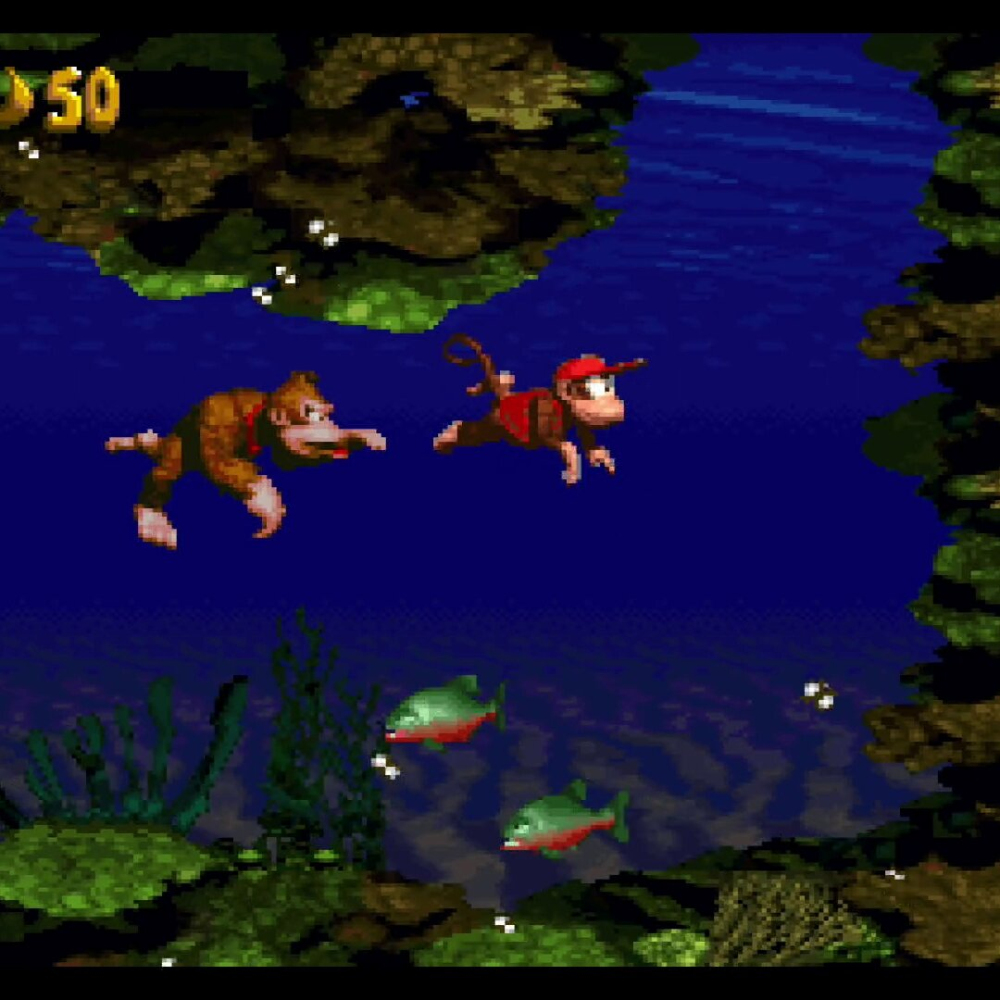
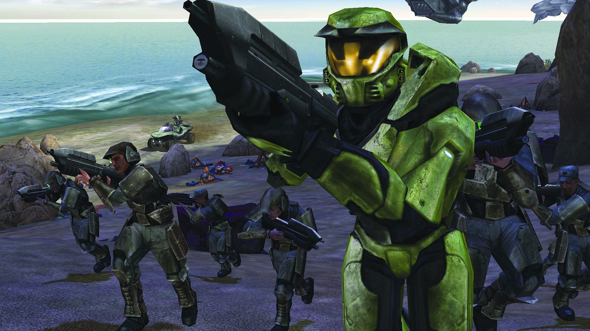
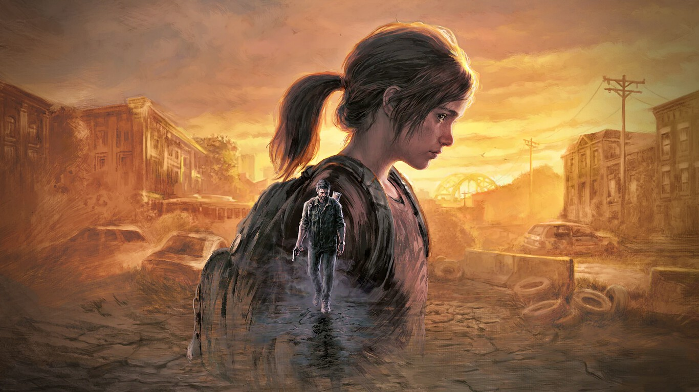
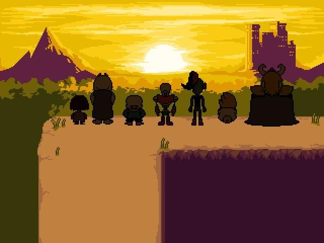
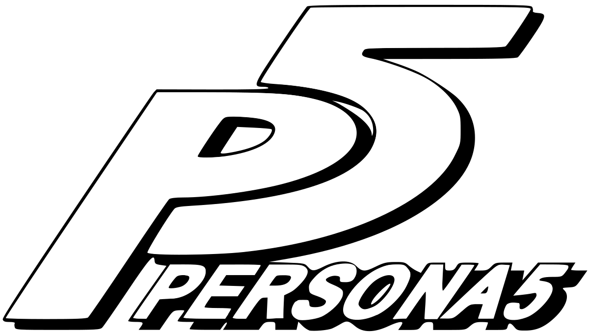

Introducción
La música de los videojuegos es indiscutiblemente uno de los géneros musicales más importantes en la actualidad, ya que ésta ha evolucionado enormemente con el paso de los años, trayendo consigo una gran cantidad de canciones icónicas, que lograron cambiar la fórmula de la creación de las bandas sonoras en los videojuegos para siempre. Aquí les dejamos algunas de las que más revolucionaron este mercado:
1.- Super Mario Bros. - Main Theme (1985)
Compuesta por Koji Kondo, es una de las canciones más importantes de los videojuegos por su melodía pegajosa y alegre, además de encajar con el ritmo del juego, además de ser innovador gracias al chip de sonido NES, que venía incluida en la consola.

2.- Tetris - Korobeiniki (1989)
Basada en una canción rusa, Korobeiniki de Tetris es uno de los temas más conocidos de la historia de los videojuegos, ya que fue el juego más vendido durante muchos años, y así consiguiendo gran popularidad.

3.- Donkey Kong Country - Aquatic Ambience (1994)
Compuesta por David Wise, es uno de los temas con ambiente acuático más importantes y conocidos de los videojuegos por su innovación en usar música ambiental al momento de sumergirte en el agua. Sirviendo de inspiración para el resto de videojuegos.

4.- Halo - Main Theme (2001)
Compuesta por Martin O’Donnell, es también un tema bastante alagado por los fans por su temática gregoriana y por ser de los primeros shooters con una banda sonora con profundidad emocional.

5.- The Last of Us - Main Theme (2013)
Compuesta por el argentino Gustavo Santaolalla, es un tema bastante mítico que, por su sencillez con la guitarra acústica, acompañada por la temática postapocalíptica del juego, logra crear una gran carga emocional, y ambientándolo de gran manera.

6.- Undertale - Undertale OST (2015)
Compuesta por Toby Fox, la banda sonora de Undertale trascendió a lo largo de los años gracias a su tono chiptune, siendo también uno de los pocos juegos indies donde su música se terminaría convirtiendo un fenómeno mundial. Y todo esto creado por solo una persona.

7.- Persona 5 - Last Surprise (2016)
Compuesto por Shoji Meguro, esta es una de las canciones más recientes en volverse muy conocida en los videojuegos, con su estilo jazz fresco logró convertirse en un fenómeno en plataformas musicales como Spotify y aparecer en conciertos en vivo.

Conclusión
Cada una de estas canciones logró romper el esquema musical en los videojuegos una marca en la industria. Algunas por su temática y otras por su innovación musical.
Gracias a estas y a muchas otras, la música en los videojuegos pasó de ser un simple atractivo extra, a convertirse en una parte fundamental en la experiencia del jugador.